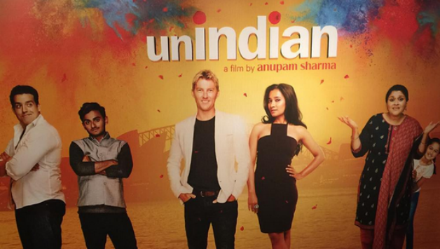

| Year |
Awards |
| 2000 |
Bradman Young Cricketer of the Year |
| 1999-2000 |
Wisden Young Cricketer of the Year |
| 2002-03 |
VB Series Player of the Series |
| 2004-05 |
VB Series Player of the Series |
| 2005 |
ICC Awards - ODI Team of the Year |
| 2006 |
Wisden Cricketer of the Year |
| 2006-07 |
DLF Cup Player of the Tournament |
| 2006 |
ICC Awards - ODI Team of the Year |
| 2006-07 |
Australia's Greatest ODI XI |
| 2007 |
Warne-Muralitharan Trophy Player of the Series |
| 2007-08 |
Border-Gavaskar Trophy Player of the Series |
| 2008 |
McGilvray Medal |
| 2008 |
Australian Test Player of the Year |
| 2008 |
Allan Border Medal |
| 2008 |
ICC Awards - ODI Team of the Year |
| 2008 |
ICC Awards - Test Team of the Year |
| 2009 |
2009 Champions League Twenty20 Player of the Series |

Meera is an Australian of Indian origin who has carved out a successful life for herself and her daughter and when she falls in love Will, it's not only scandalous, it's unindian!. The movie is an Australian–Indian production in which Lee's character, Will,
In the romantic comedy UNindian, Lee, in his acting debut, explores the bashful and enthusiastic traits of an "Aussie English" teacher working in Sydney. Smitten from afar with Meera (Tannishtha Chatterjee), a divorced single parent whose mother (Supriya Pathak) is desperate for her to find a suitable Indian husband, preferably a doctor.